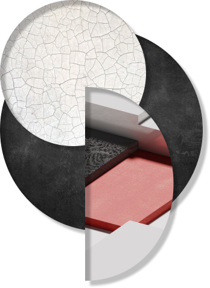

Csóka Nikoletta vagyok, 18 éves és nemrég kezdtem meg tanulmányaimat a Budapesti Műszaki és Gazdaságtudományi Egyetemen ipari termék, és formatervező mérnöki szakán. Régebben versenyszerűen sportoltam, teniszeztem, majd a squash világában próbáltam sikereket elérni, de a tanulmányaim miatt ez most háttérbe szorul. Szabadidőmben szívesen rajzolok, de amit mégjobban szeretek, az a logikai játékok megfejtése.